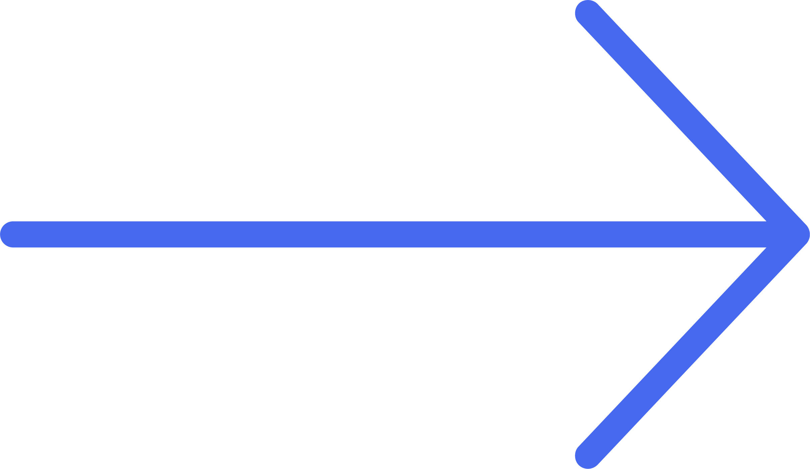

Year
2022Length
5 wksTitle
Not DeliveredMedium
Print, 40 pgsDetails
Not Delivered is an organized cacophony of personal text exchanges that probably would've been better off not delivered.Not Delivered unites both the print and digital worlds. At the end of each chapter is a QR code that readers can scan to visit an app containing overflow content that is perpetually growing.